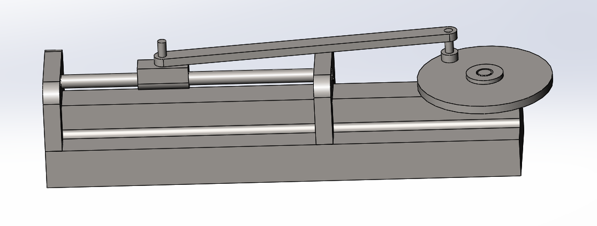

I have vast amounts of time in the modeling program Solidworks and I have been familiarized with the software AutoCad since highschool. I do not have images of the things I made in highschool 5 years ago; However, I do have the recent things that I have modeled in SolidWorks.
Listed below are the models that will be showcased below.
- Sheet Metal Box
- Assembly of a Piston
- 3D Rendering of Parts
- Structural Analysis of Parts
Sheet Metal Box

 To the left you will find a sheet metal box in its opened position and to the right you will find
the same part has been demonstratively folded to ensure that the sheet metal may be folded the way
intended. Knowing how to do this allows for a very practicle skill of designing a box that starts
flat in an assembly line and is meant to fold.
To the left you will find a sheet metal box in its opened position and to the right you will find
the same part has been demonstratively folded to ensure that the sheet metal may be folded the way
intended. Knowing how to do this allows for a very practicle skill of designing a box that starts
flat in an assembly line and is meant to fold.
Assembly of a Piston
 To the left you will find a sheet metal box in its opened position and to the right you will find This is a 3D-model of a working piston that I created. A simple tool that